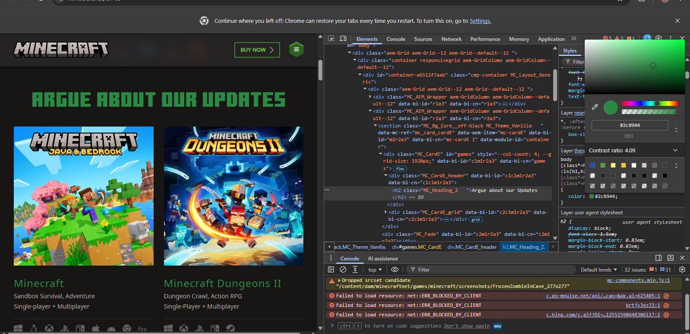

My Dev Tools Vandalism
I used browser developer tools to temporarily "vandalize" a website. Below is a screenshot showing my changes. These edits only appeared on my computer and did not affect the actual website.

What I "Vandalized"
Describe the changes you made to the website using the browser's developer tools. Some potential questions to consider:
- What text did you edit?
- I edited the Text above their games. - What CSS properties did you modify?
-I Changed the Size and Color of the text. - What made your edits interesting or amusing?
-It made fun of the fact that a lot of their updates make people unhappy, despite the new improvements they make that are actually quite refreshing. - Did you understand why some changes worked and some didn't?
-Yes, because of how a lot of the specific CSS rules were structured and blocked access to certain features because of how they access their own files/images. - Why did you choose the changes you did?
- Partially because it was difficult to find something that I could change; it was also in a pretty visible and important spot. - Were you able to understand how the HTML and CSS worked together to make the changes you made?
- Yes, I could see how the HTML elements were styled by the CSS rules and how my changes affected the appearance of the page. - Do you think you have a better sense of how dev tools can be used while crafting your own webpages?
- Yes, I have a better sense of how dev tools can be used to inspect and modify the HTML and CSS of my own webpages, and have even done it to my own pages to see it in action and test certain changes.